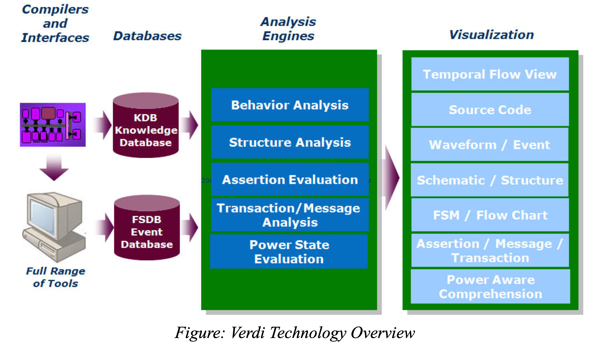

0. Linux环境下的EDA工具使用
0.1 Linux常用工具
Terminal
Vim (Gvim)
GVIM 配置
全局配置文件：~/.vimrc。
设置字体的命令 :set guifont = Courier\ 14，如果你不知道可用的字体名字，使用下面的命令可以得到一个字体名字的列表：:set guifont=*。
复制粘贴
- 进入 normal /正常模式（刚进入 vim 的默认模式），如果你在 insert 模式，按下若干次 Esc 可以进入 normal 模式。
- 把光标移动到开始复制的位置。
- 按下 v 来选择字符（光标移动到结束复制的位置）。
- 按下 y 来复制。
- 光标移动到想要粘贴的位置，按下 p 粘贴。
Makefile
FIXME!!!
基本结构
赋值
在 Makefile 中，= 用于定义递归变量，这意味着变量的值在每次使用时都会重新计算。 这在你需要在变量的值中使用其他变量，并且希望这些变量在使用时才被计算时非常有用。
例如，假设你有两个变量 VAR1 和 VAR2，你希望 VAR2 的值依赖于 VAR1 的当前值。你可以这样定义这两个变量：
然后，你可以在后续的代码中改变 VAR1 的值，VAR2 的值会随之改变：
在这个例子中，如果你打印 VAR2 的值，你会看到 value2，而不是 value1。这是因为 VAR2 的值在每次使用时都会重新计算，所以它总是等于 VAR1 的当前值。
如果你在这个例子中使用 := 而不是 =，VAR2 的值在定义时就被计算出来，所以无论 VAR1 如何改变，VAR2 的值都不会改变。
函数
$(filter-out pattern…,text)：从 text 中过滤掉与 pattern 匹配的单词。$(wildcard pattern)：返回与 pattern 匹配的所有文件名。注意，该函数不会递归寻找！$(addprefix prefix, names…)：在 names 的每一个单词前面添加 prefix。
TCL
目前大部分的EDA工具都支持 TCL (Tool Command Language) 脚本语言，主要使用于发布命令给一些交互程序如文本编辑器、调试器和 Shell 。
TCL 的常用语法简单易懂，一些常用的用法示例如下：
# print a string
puts "Hello World!"
# set a variable
set variableA 10
set {variable B} test
puts $variableA # 10
puts ${variable B} # test
# perform arithmetic calculations
set a 21
set b 10
set c [expr $a + $b]
puts "Line 1 - Value of c is $c\n" # Line 1 - Value of c is 31
set d [expr $a - $b]
puts "Line 2 - Value of d is $d\n" # Line 2 - Value of d is 11
set e [expr $a * $b]
puts "Line 3 - Value of e is $e\n" # Line 3 - Value of e is 210
set f [expr $a / $b]
puts "Line 4 - Value of f is $f\n" # Line 4 - Value of f is 2
set g [expr $a % $b]
puts "Line 5 - Value of g is $g\n" # Line 5 - Value of g is 1
此外还有 for 循环和 if-else 分支语句也是常用的语法。
配合网络教程和 ChatGPT 可以应对在本文档中碰到的所有 TCL 语句。
RISC-V Toolchain
GDB
查看内存中的数据
在 GDB 中，您可以使用 x 命令来查看内存中的数据。x 命令后面可以跟一个或多个参数，用于指定要查看的内存地址和格式。
以下是一些常见的使用方式：
x/10b 0x12345：以字节为单位，查看地址 0x12345 开始的 10 个字节的内容。x/10h 0x12345：以半字（2 字节）为单位，查看地址 0x12345 开始的 10 个半字的内容。x/10w 0x12345：以字（4 字节）为单位，查看地址 0x12345 开始的 10 个字的内容。x/10g 0x12345：以巨字（8 字节）为单位，查看地址 0x12345 开始的 10 个巨字的内容。x/i：一种特殊的格式，用于将内存中的内容解释为机器指令。i 代表 "instruction"，即指令。例如，x/i $pc这条命令会显示程序计数器（PC）当前指向的机器指令。
查看寄存器中的数据
-
使用 x 命令来查看寄存器中的内容。 例如，
x/1w $sp会显示栈指针（SP）当前指向的内存位置的内容。 -
使用 info registers 命令来查看所有寄存器的当前值。这个命令会显示所有通用寄存器和一些特殊寄存器（如程序计数器）的值。
-
info all-registers列出所有寄存器的值，包括通用寄存器（如x0到x31），特权模式寄存器（如mstatus、mcause等），以及其他CSR寄存器。 -
如果您只想查看某个特定寄存器的值，可以使用 print 命令。例如，
print $r0会显示 r0 寄存器的值（在 ARM 架构中）。
写入内存或寄存器
- 使用 set 命令来写入内存。例如，
set {int}0x12345 = 0会将地址 0x12345 处的 4 个字节的内容设置为 0，set {int}0x54321 = 0xabcdf会将地址 0x54321 处的 4 个字节的内容设置为 16 进制的 abcdf。 - 使用 set 命令来写入寄存器。例如，
set $r0 = 0会将 r0 寄存器的值设置为 0。 - 使用 set 命令来写入特殊寄存器。例如，
set $pc = 0x12345会将程序计数器（PC）的值设置为 0x12345。/x 用于16进制格式，/d 用于十进制格式等
危险
ROM（只读存储器）是一种只能读取不能写入的存储器。 如果你试图在 GDB 中使用 set 命令写入 ROM 地址的数据，GDB 可能不会显示错误，但实际上数据并没有被写入 ROM。 当你使用 x 命令读取该地址时，GDB 可能会显示你之前尝试写入的数据，但这只是 GDB 内部状态的一部分，不代表实际的硬件状态。 在真实的硬件中，ROM 的内容在写入后就不能更改。
0.2 EDA工具介绍
该流片模板主要依赖于以下的 EDA 工具：
Cadence Genus 19.12
在该流片模板文件中，我们主要依赖于 Makefile 和 TCL 自动化脚本文件进行逻辑综合，一般情况下不需要单独启动 Genus 综合工具。如需进行较为细致的调试，在终端输入 b genus 启动 Genus 综合工具。
默认情况下在当前目录下生成 genus.log 和 genus.cmd 日志文件，分别记录了 Genus 的终端输出和用户输入的命令。
为了更加全面了解Genus综合工具，可以查看Cadence的官方说明手册和文件：
- Genus Synthesis Flow Guide:
/cadtools/cadence/genus19.12/doc/genus_start/genus_start.pdf - Genus User Guide:
/cadtools/cadence/genus19.12/doc/genus_user/genus_user.pdf - Genus Command Reference:
/cadtools/cadence/genus19.12/doc/genus_comref/genus_comref.pdf
Cadence Innovus 20.10
该流片模板文件中，将主要围绕 Innovus 工具进行数字模块的后端设计。在终端中输入 b innovus 启动 Innovus 工具，默认情况会自动启动 GUI 界面，有助于我们观察后端版图的各类情况，方便迭代设计与优化。
使用以下命令可以打开、关闭 GUI 界面。
大部分的设计流程使用 Innovus 的终端输入 TCL 脚本命令。
若使用 GUI 界面进行操作，相应的操作也会自动转化成 TCL 指令，可以打开 innovus.cmd 查看 GUI 界面的操作与 Innovus 指令的对应关系。
Cadence 的官方说明手册和文件：
- Innovus User Guide:
/cadtools/cadence/innovus20.10/doc/innovusUG/innovusUG.pdf - Innovus Error Messege:
/cadtools/cadence/innovus20.10/doc/innovuserrmsg/innovuserrmsgTOC.html
ARM SRAM Compiler
许多数字模块中依赖于较大规模的寄存器堆/SRAM高速缓存，这些模块需要替换成专门的 IP 核，而不是使用 RTL 代码直接综合，从而可以显著减小模块面积。
替换 SRAM 时，我们通常使用 ARM 提供的 High Density Single Port SRAM SHVT MVT Compiler。
二进制执行文件位于：
/work/home/tyjia/common/TSMC_22NM_ULL/CA001/arm/tsmc/cln22ul/sram_sp_hde_shvt_mvt/r6p0/bin/sram_sp_hde_shvt_mvt
在命令行中输入该执行文件即可启动。
用户手册位于：
/work/home/tyjia/common/TSMC_22NM_ULL/CA001/arm/tsmc/cln22ul/sram_sp_hde_shvt_mvt/r6p0/doc/sram_sp_hde_shvt_mvt_userguide.pdf
ARM Register File Compiler
替换寄存器堆时，我们使用 ARM 提供的 High Density Single Port Register File SHVT MVT Compiler。
二进制执行文件位于：
/work/home/limingxuan/common/TSMC_22NM_ULL/arm_rf_sp_shvt_mvt/tsmc/cln22ul/rf_sp_hde_shvt_mvt/r3p1/bin/rf_sp_hde_shvt_mvt
在命令行中输入该执行文件即可启动。
用户手册位于：
/work/home/limingxuan/common/TSMC_22NM_ULL/arm_rf_sp_shvt_mvt/tsmc/cln22ul/rf_sp_hde_shvt_mvt/r3p1/doc/rf_sp_hde_shvt_mvt_userguide.pdf
Cadence Virtuoso 6.1.8
在进行数字模块的 DRC 与 LVS 检查时，会使用到 Cadence Virtuoso 工具。在终端中输入b virtuoso打开 Virtuoso 工具。
Synopsys VCS
我们所说的 VCS，指的是全套“功能验证解决方案”（a full suite of "Functional Verification Solution"）。 另一个容易混淆的概念是 VCS-MX，它相比 VCS，增加了对 VHDL 的支持，相应地，处理 RTL 的步骤也会比 VCS 多。
VCS-MX 流程
VCS-MX 通过以下三步来处理 RTL：
- 分析源文件（analyze）。
- 处理源文件（elaborate）。
- 仿真可执行文件（simulate）。
$ vlogan [vlogan_options] file1.v file2.v // analyze
$ vhdlan [vhdlan_options] file3.vhd file4.vhd // analyze
$ vcs [compile_options] design_unit // elaborate
$ simv [run_options] // simulate
VCS 流程
VCS 将前两步合并，简化为了两步。
- 编译源文件（compile）。
- 仿真可执行文件（simulate）。
生成波形文件
生成 .fsdb 波形文件需要用到如下4个系统函数：
$fsdbDumpfile(“<filename.fsdb>”)$fsdbDumpvars(<levels>,<module_name>)$fsdbDumpon$fsdbDumpoff
下面是一个实例：
initial begin
$fsdbDumpfile(“dump.fsdb”);
$fsdbDumpvars();
#100;
$fsdbDumpoff;
#700;
$fsdbDumpon;
#10500;
$fsdbDumpoff;
end
Synopsys Verdi
Verdi 是一个自动调试平台（automated debug platform），用于观察波形、调试 RTL。

编译器和接口
- 编译器：Verdi 为大多数设计和验证环境中使用的语言提供编译器，如 Verilog、VHDL 和 SystemVerilog 以及电源代码（CPF 或 UPF）。在分析和编译代码时，会检查语法和语义错误。
- 接口：Verdi 可以导入其他仿真器生成的标准 VCD 和 SDF 数据，并将结果存储在快速信号数据库（Fast Signal Database，FSDB）中。也可以通过对象文件（object files）链接到仿真器（例如 VCS）直接生成 FSDB。
数据库
- 知识数据库（Knowledge Database，KDB）：在编译时，Verdi 会识别和提取设计的特定结构、逻辑和功能信息，并将由此产生的详细设计信息存储在 KDB中。
- 快速信号数据库（Fast Signal Database，FSDB）：FSDB 以高效紧凑的格式存储仿真结果。Synopsys 提供可以链接到常见仿真器的对象文件用来直接以FSDB 格式存储仿真结果。你也可以通过转换 VCD 文件的方式生成 FSDB。
分析引擎
使用来自 KDB 和 FSDB 的信息进行分析。
可视化
Verdi 中有如下的结构可视化和分析工具：
- nTrace：用于源代码
- nWave：用于波形
- nSchema：用于原理逻辑图
- nState：用于有限状态机（FSM）